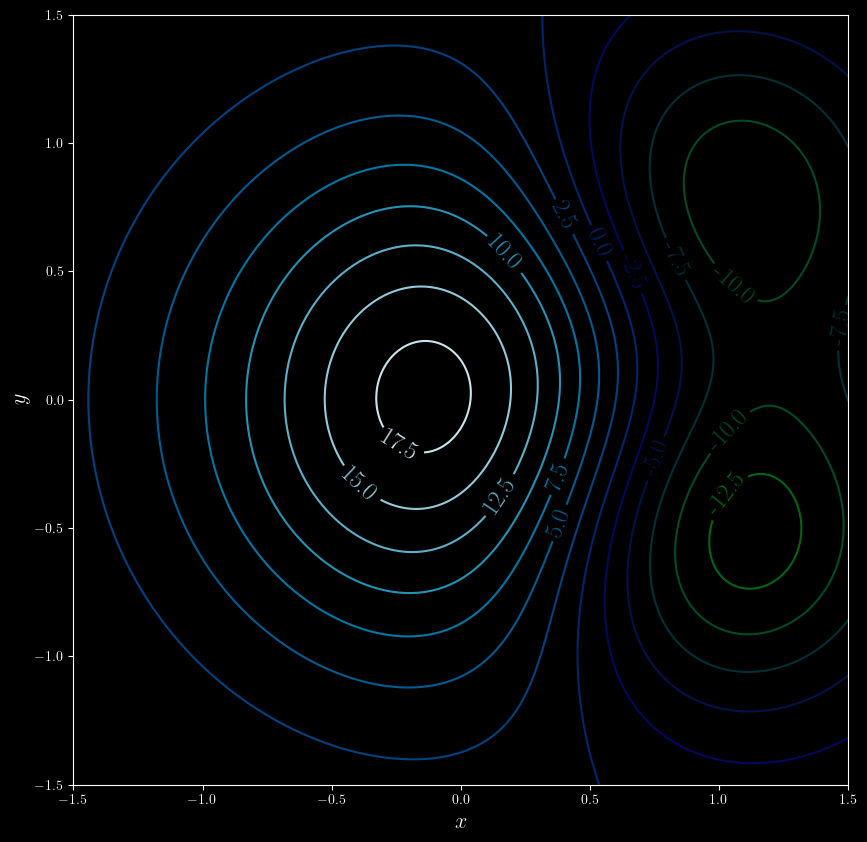
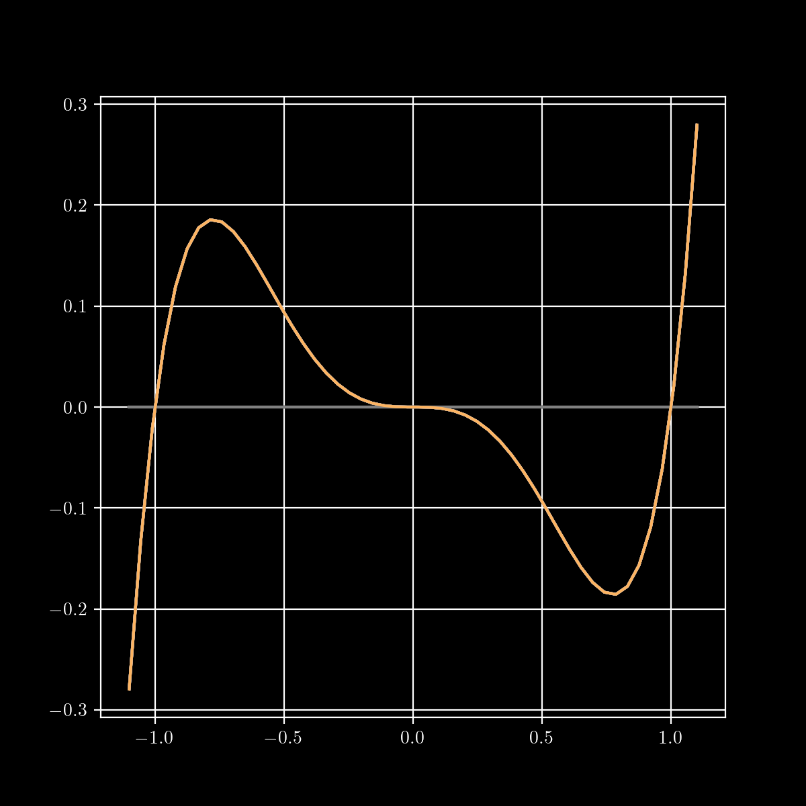

Drew Youngren dcy2@columbia.edu
The directional derivative of a differentiable function $f$ in the direction of unit vector $\vec u$ at $\vec x$ is \[D_{\vec u} f(\vec x) = \lim_{h\to 0}\frac{f(\vec x+h\vec u) - f(\vec x)}{h} = \nabla f(\vec x)\cdot\vec u.\]
3 important properties:
A local minimum (resp. maximum) of a scalar field $f$ is a value $f(\vec a)$ such that \[f(\vec a) \leq f(\vec x)\] (resp. $f(\vec a) \geq f(\vec x)$) for all positions $\vec x$ in some open set containing $\vec a$.
An absolute minimum (resp. maximum) of a scalar field $f$ on a particular domain $D$ is a value $f(\vec a)$ such that \[f(\vec a) \leq f(\vec x)\] (resp. $f(\vec a) \geq f(\vec x)$) for all positions $\vec x \in D$.
Consider functions of the form \[ f(x,y) = \pm x^2 \pm\ y^2. \]
A critical point of a function $f$ is a position $a$ such that $f$ is not differentiable or \[\nabla f(\vec a) = \vec 0. \]
Suppose $f(\vec a)$ is a local extremum, then $\vec a$ is a critical point.
Identify the critical points from the contour plot below. Do they correspond with a local min or max or neither?

Find all critical points of the function \[ f(x,y) = x^4 + y^4 + 4 x y - 1.\]
Solution. \[\nabla f = \bv{4x^3 + 4y \\ 4 y^3 + 4x} = \bv{0 \\ 0}\]
Substituting $y = -x^3$,\[ x^9 - x = \]\[ x(x - 1)(x + 1)(x^2 + 1)(x^4 +1) = 0 \] has roots $x = 0, \pm 1$.
This gives 3 critical points: $(-1,1)$, $(0,0)$, and $(1, -1)$.
In 1-D, the second-derivative determines classification at critical points.
Otherwise, the test is inconclusive.
Classify the critical points of the function \[ f(x,y) = x^4 + y^4 + 4xy - 1 \] above.
| $(x,y)$ | $f_{xx}$ | $f_{yy}$ | $f_{xy}$ | $D$ | class |
|---|---|---|---|---|---|
| $(0,0)$ | 0 | 0 | 4 | -16 | saddle |
| $(1,-1)$ | 12 | 12 | 4 | 128 | min |
| $(-1,1)$ | 12 | 12 | 4 | 128 | min |
An open set $U\subset \RR^n$ is one where each element can be surrounded by a (small) ball of elements in the set.
A closed set contains all its boundary points.
On open sets $\longrightarrow$ look for critical points
On boundary points $\longrightarrow$ Lagrange multipliers
Find the closest point to the origin on the plane \[z = x -2y + 3.\]